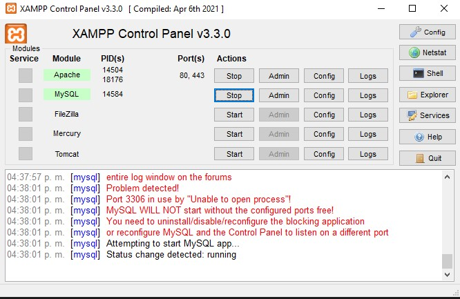
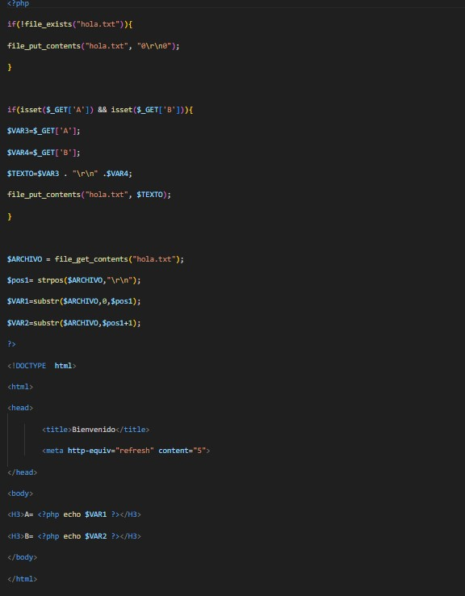
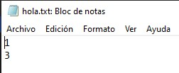
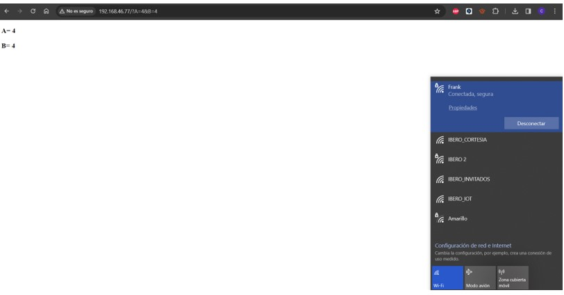
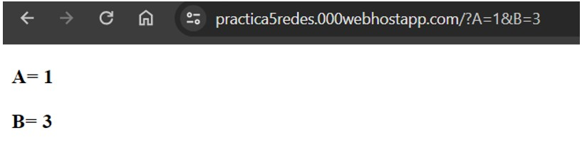
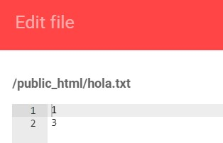

PHP es uno de los lenguajes de alto nivel que podemos utilizar para enviar y recibir datos, configurar interfaces para interactuar con informacion.
Eb esta practica se tuvo el primer acercamiento a interactuar con PHP, enviar datos y observar su modificacion en tiempo real.
- Introducción -
PHP es un lenguaje de programación ampliamente utilizado para el desarrollo web, conocido por su facilidad de uso y versatilidad. Se utiliza principalmente en la creación de sitios web dinámicos y aplicaciones web. Además de su potencial en el ámbito web, PHP también puede interactuar con datos de sensores o dispositivos externos, ya sea a través de bibliotecas específicas o mediante la comunicación con interfaces de hardware. Esto permite a los desarrolladores integrar funcionalidades de adquisición de datos en tiempo real,
control de dispositivos y monitoreo remoto dentro de sus aplicaciones web, lo que abre un amplio abanico de posibilidades para la automatización, la monitorización y la interacción con el entorno físico a través de la web.
- Materiales -
computadora
Programa XAMPP
ESP 32
- Desarrollo -
Objetivo General:
Conocer, identificar y comprobar el funcionamiento de una página web con programación PHP, Servidor Local, un servidor en la nube y envió de datos con el módulo ESP8266
Para ello se desarrollaron los siguientes objetivos especificos:
Utilizando bloc de notas desarrollar una página web con código PHP que permita actualizar el valor de un sensor. Recuerda guardar el archivo como “index.php”.
Utilizando XAMPP, coloca la pagina web en el servidor local y visualízala en el explorador, corrobora el correcto funcionamiento para actualizar los valores de la página.
Utilizando otra computadora y una conexión con el servidor local mediante su dirección IP y modifica los datos de la página Web de PHP utilizando la siguiente URL con la IP correcta:
192.168.0.X/?A=1&B=3
Utilizando un servidor en la nube, sube tu página Web de PHP, visualízala en el explorador con la dirección Web y corrobora su funcionamiento directo desde el explorador.
Utilizando el NodeMCU y el ejemplo de GET, realiza una conexión con el servidor local mediante su dirección IP y modifica los datos de la página Web de PHP utilizando la siguiente petición (Request) con la IP correcta:
192.168.0.X/?A=1&B=3
Utilizando un servidor en la nube, sube tu página Web de PHP, utilizando el NodeMCU y el ejemplo de GET, realiza una conexión a la dirección Web y corrobora el funcionamiento del sistema directo desde el explorador.
- Resultados -
Primera Parte

Al cargar el codigo en la carpeta htdocs del servidor XAMPP podemos acceder a el mediante la IP asignada por el router, donde verificamos que efectivamente se muestre la pagina para posteriormente poder cambiar los valores de las variables
.

Segunda Parte

Al hacer el envio de los datos verificamos que se actualizan correctamente en el servidor y se escriben en el archivo hola.txt.
Tercera parte

Para este ejemplo, una computadora sirvio como servidor y otra como la que realiza la peticion, ambas conectadas a un red de internet celular para simular la red local.
Cuarta parte


Al hacer el envio de los datos a la pagina subida en 000webhost verificamos que se actualizan correctamente y se escriben en el archivo hola.txt.
Quinta parte
Para esta parte lo que se realizo fue cambiar el metodo GET por POST para enviar los datos al servidor sin la necesidad de escribirlos en la URL, solo se cambio el metodo GET por POST en el codigo de PHP.
Sexta Parte
Para enviar los datos al servidor en la nube solo es necesario cambiar la URL donde esta alojado el servicio.
- Conclusiones -
Esta practica sirvio bastante para tener un primer acercamiento a como pueden interactuar dipositivos fisicos, con servicios web y otros elementos para poder tener aplicaciones web que obtengan y manejen datos de muchas fuentes.
- Referencias -
- M. Reyes, Comunicaciones digitales, 1.ª ed. Universidad Autónoma Metropolitana, 2017. [En línea]. Disponible en: https://casadelibrosabiertos.uam.mx/gpd-comunicaciones-digitales.html